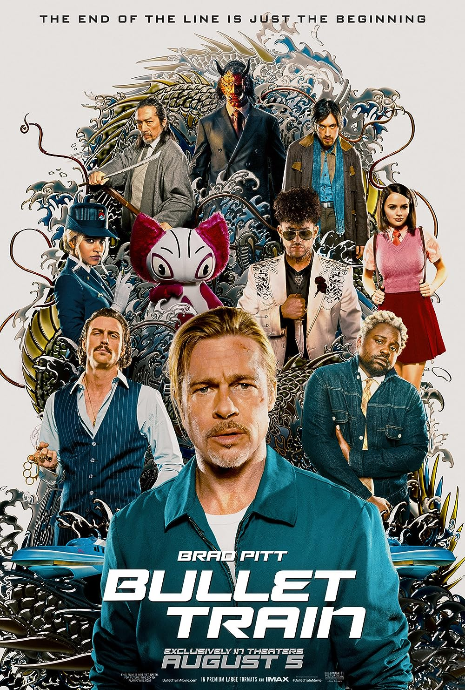
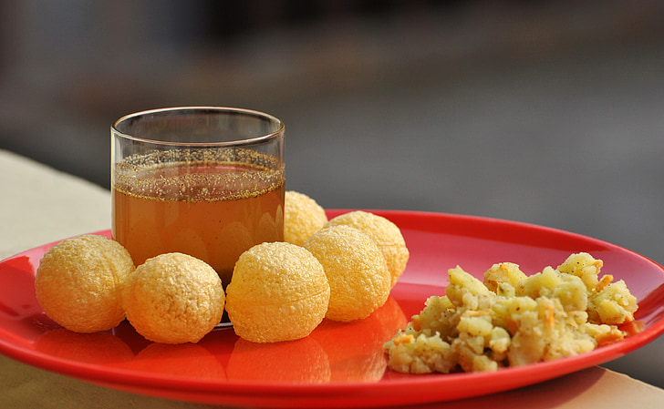

My favorite movie is Bullet Train. Bullet Train is a comedy action movie about many criminals all trying to kill eachother and stay alive on a high-speed Bullet Train. The main charcter is known to have bad luck and just ends up on the train with a bunch of murders. This is my favorite movie because of the shocking plot twist and turn of events near the end of the film. I first watched this on a plane to India and have watched in several times since. It is my go-to movie every single time I show someone a movie, and they always end up liking it too.

My favorite sport is Badminton. Badminton is a sport that uses two or four players hitting a birdy with rackets, there is usally a net between them. I love badminton because I find it really fun. I usally play with my older sister in the front yard and the games go on for what feels like hours. We played a lot of badminton this year mostly on the days when is wasn't raining. I love playing badminton because I find it really fun and enjoyable.
My favourite food is Pani Puri also commonly known as Gol Gappa. Gol Gappa are a classic savoury Indian street snack.
I love Gol Gappe because I don't get them very often, but I mostly eat them when I go to India.
